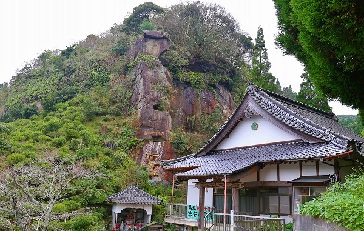

佐賀県の唐津市街から数キロ南の山間部にある
法安寺。
そこにビッグな摩崖仏があると聞き、行ってみたよ。
この寺の開基は大正12年。
波多氏の霊を慰めるために開かれた寺院だという。
波多氏とは松浦党最大の名門だ。
松浦党とは源平合戦の壇ノ浦の戦いや蒙古襲来の戦いにおいて勇名を馳せた水軍である。
しかし戦国末期、朝鮮出兵の際に豊臣秀吉の怒りを買い、領地を没収され歴史の表舞台から消えて行った悲劇の一族と言えよう。
そんな一族の霊を祀るように天啓を受けた僧が開いたのが、ここ法安寺なのだ。
入口にはその
波多氏の石像がドドーンと鎮座している。
高さは5.5ｍ。
大きな石像だが、この後
この石像が霞む程凄い方々が登場しますのでご期待くださいませ。
まずは本堂にお参り。
本堂の前にはたくさんの杖があった。
もしかして凄い山道があったりするのか？

本堂下にある護摩堂の奥の岩肌に
何か巨大なモノが！
おおお！
でっかい不動明王じゃないか！
剣をふり上げた勇ましい不動サマの摩崖仏。
バッチリと色が塗られているのが九州っぽい。
身代不動明王
安全祈願
奉納 日東鉱業所
昭和三十三年五月吉日
とある。
思いの外、新しいのだ。
日東鉱業所とは恐らく伊万里や唐津に多くあった炭鉱に関する企業であろう。
詳しくは知らないので炭鉱クラスタの皆さん、教えてくだされ。
さらに進むと
巨大な涅槃像の摩崖仏が現れる。
長さは10ｍ程。
昭和27年建立。
こんなに巨大な涅槃像だが、6人の石工がノミとハンマーだけでわずか5か月で完成させたという。凄くないですか？
近くには何故か歌の看板が。
んん？どこかで見たような…
そうだ！久留米ラーメンの有名店、丸星の店内にもあった！
作詞者の小川さんは丸星のオーナーで警察犬のブリーダーでもあるのだ。
とはいえ、何故ここにこの看板があるのかは一切判らないのだが。
ただ、歌詞の3番にある「佐賀の地蔵尊に見守られ」というのがここ法安寺の事なのかな？とは思ったが、特に地蔵推しの寺でもないしなあ。
さらにこんな看板も。
さっきは警察犬と書いて「とも」だったが今度は「おれ」、一人称になっちゃったよ…。
にしてもどっちもいい歌詞だなあ、迷いのないメッセージにグッとくる。
さて。
不動明王、涅槃像と2大摩崖仏が出そろったが、そこから先も摩崖仏は延々と続く。
四国八十八カ所の写し本尊が刻まれているのだ。
昭和27年、この寺の開基30周年の記念事業としてこれらの摩崖仏は彫られた。
摩崖仏、とはいうものの彫りは深く、ほぼ全身彫りに近い。
それだけに立体感も強く、印象も強烈だ。
さらに不動サマのファイアーまで周辺に彫り込む気合の入り方。
いまにも不動様が飛び出してきそう。
湿気の多い地形なのだろう、多くの石仏は苔に覆われている。
昭和27年の作とは思えない程、貫禄が漂っている。

どちらかというと遺跡に近い風格だ。
見上げれば、上にも摩崖仏が。

さらに見上げるとさらに上にも摩崖が！
これは想像を超えた大規模な摩崖仏群だぞい。
仏像だけでなく唐津らしく恵比寿さんや…
何故か蒋介石まで。
延々と続くミニ四国遍路の旅路だが、チョット上の方は無理だなあ。
スミマセン。今度は登山仕様で来ます。
四国八十八カ所の本尊以外にも500体以上の石像が並ぶ境内だが、コンクリ像も。
ただし、石像の上にコンクリで補強しているのかもしれない。
こち亀の両さんみたいなお地蔵さん。
実在の人物を模して作ったものなのだろうか。
境内の一番奥には浅い岩陰に大量の石仏が並んでいた。
前掛けをしているので一見お地蔵さんのようだがよく見たら観音サマでした。
その奥には不動明王コーナー。
遮光器っぽい地蔵。
それにしても九州の不動明王は必ずと言っていいほど彩色が施されている。
先程の身代不動もそうだが、大きさや規模に関係なくキッチリ塗りたがるなあ。
例えば鹿児島や宮崎にある田の神も石像に色を塗るが、その辺と関係があるのだろうか？
それとも大陸との交流が盛んだった地域だからなのだろうか？
倶利伽羅不動もばっちりペイントされてます。
谷底なのでどこへ行っても苔が凄い。
ホント遺跡みたいなところだった。
この岩の隙間も通り抜けられるのだろうか。
再び本堂付近に戻る。
三位一体の三猿。
大日様の隣には鬼子岳城主（つまり波多氏）の像が。
鬼子岳城はこの寺の南にある。
ぼけ封じ三門。ミニ鳥居でお馴染み
粟嶋神社の仏教バージョン。
これを潜り抜けるとぼけ封じ開運厄除けに御利益があるとか。
にしても一から十まで石尽くしの寺だった。
参照；九州の巨人！巨木！！と巨大仏！！！オガワカオリ